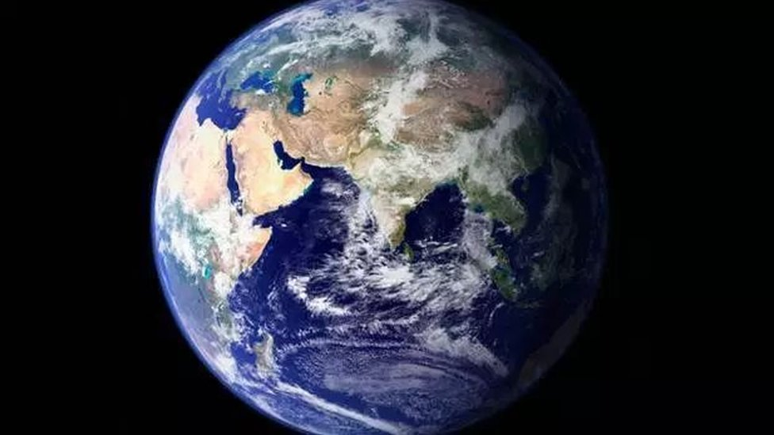

|

Dünya
Dünya, Güneş’e en yakın üçüncü gezegen olup, üzerinde yaşam bulunan tek gezegendir. Güneş Sistemi’nin yaşanabilir bölgesinde yer alması, atmosferinin
bileşimi ve yüzeyinde sıvı halde suyun bulunması, canlıların varlığını mümkün kılar. Yüzeyinin yaklaşık %71’i okyanuslarla kaplıdır, geri kalan kısmı
ise kara parçalarından oluşur. Bu özellik, Dünya’yı “Mavi Gezegen” olarak anılmasını sağlamıştır.
Dünya’nın atmosferi, azot (%78) ve oksijen (%21) başta olmak üzere çeşitli gazlardan oluşur. Bu atmosfer, Güneş’ten gelen zararlı ışınlara karşı koruma
sağlar ve sıcaklık dengesini koruyarak yaşam koşullarını sabit tutar. Ayrıca su döngüsü, hava olayları ve mevsimler de bu atmosferin etkisiyle gerçekleşir.
Gezegen, kendi ekseni etrafında 24 saatte bir döner; bu dönüş hareketi gece ve gündüzün oluşmasını sağlar. Aynı zamanda Güneş etrafında bir tam turunu
365 gün 6 saatte tamamlar; bu da bir yılın uzunluğunu belirler ve mevsimlerin oluşmasına neden olur. Eksen eğikliğinin 23,5 derece olması sayesinde Dünya’da
farklı bölgelerde farklı iklimler yaşanır.
Dünya’nın tek doğal uydusu olan Ay, gelgit olaylarının meydana gelmesinde ve Dünya’nın dönüş dengesinin korunmasında önemli rol oynar. Ayrıca Ay’ın
çekim etkisi, okyanus akıntılarını ve bazı iklim süreçlerini dolaylı olarak etkiler.
Yüzeyinde dağlar, vadiler, ovalar ve denizler gibi farklı jeolojik yapılar bulunur. İç yapısı çekirdek, manto ve kabuk olmak üzere üç ana katmandan oluşur.
Çekirdeğinde demir ve nikel bulunur; bu yapı, gezegenin manyetik alanını oluşturur ve Güneş’ten gelen zararlı parçacıklara karşı koruma sağlar.
Sonuç olarak Dünya, karmaşık ama dengeli bir sistemdir. Atmosferi, suyu, manyetik alanı ve uygun sıcaklık aralığıyla yaşam için eşsiz bir ortam sunar.
Bilim insanları, evrende başka yaşanabilir gezegenler arasa da şu ana kadar Dünya’nın sahip olduğu koşullara benzer bir gezegen bulunamamıştır. Bu nedenle
Dünya, insanlık için yalnızca bir “yaşama alanı” değil, aynı zamanda korunması gereken tek yuva niteliğindedir.
|